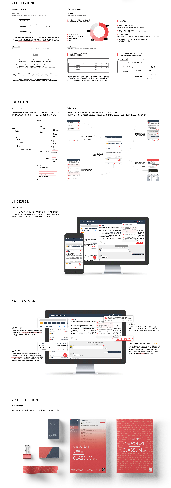

CLASSUM
CLASSUM is a combination of two words Class + Forum. Why these who words?
Back in 2016 our team questioned why students would not ask questions in class even though they do not understand the class materials. Life in college changes dramatically from high school, and students face problems such as managing time to study, understanding the course materials or handling the pressure or workload. And accordingly, 30% of college drop outs are in their freshmen year! But the universities are not taking much actions in the way they teach to tackle these problems in students' perspective. So in 2016 our team made a pilot service (before starting our own service) via a chatting application with the partnership of Computer Science department student body council in KAIST.
We created open chatrooms for each classes and sent out the links to the students that wanted to participate in class Q&A chatroom. The results were amazing. We started with 4 classes but ended up opening 70 classes! Students not only started to ask questions but answer each others’ questions and after 2 semesters of operating the pilot service, students requested for an individual Q&A platform. So in 2017, with survey, interview and research, in 8 months we developed one and only student based UI/UX learning service CLASSUM!
CLASSUM’s main features focused on lowering emotional and physical barriers that students had when asking questions in class by adopting chatting UI along with SNS UI (like button, time line UI etc. ) that will provide a comfortable educational experience for both professors and students. 90% of the students that used CLASSUM said it enhanced their studies! We found out that by creating a comfortable Q&A platform we didn’t only encourage students to ask question and to learn but, we also broke down the wall between 1) in class and out of class learning 2) professor and students 3) students and students, which in return created a more interactive class for professors to teach and students to learn from; professors and from each other.
So, we didn’t stop there. From December 2017 to February 2018, we invested 3 months in developing our newly released service 2.0. And now it is launched and being used this Spring semester in about 40 courses in KAIST. With this new method of learning, we are certain that CLASSUM will change the way we learn! Visit our website: www.classum.org for more information :D

Design Process
